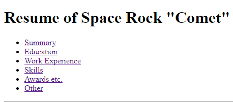
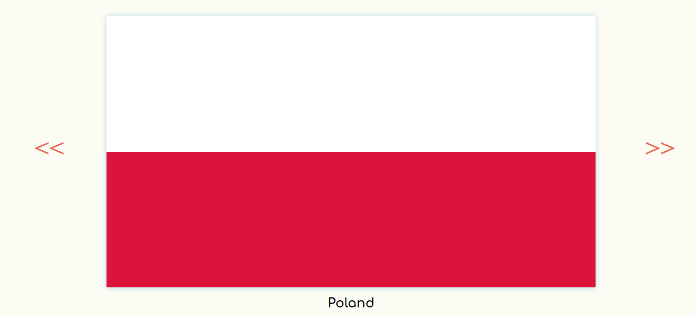
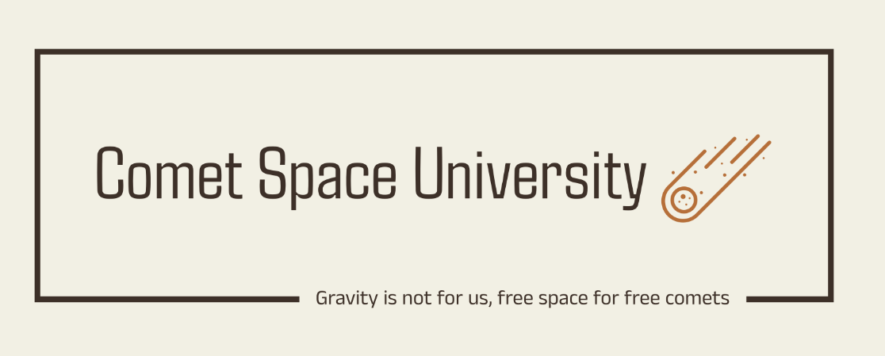
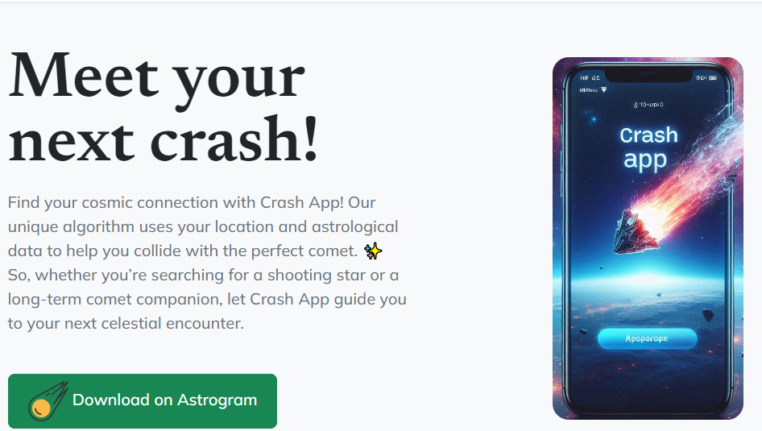

Gordianus Poszukiwacz
An aspiring web developer with a passion for uncovering the mysteries of code. 🕵️♂️💻 I’m driven to create unique and innovative digital experiences that engage users and unlock their potential.
Hello
Currently, I’m on an incredible journey through the world of web development, learning everything from HTML, CSS to DApps, all thanks to The Complete 2024 Web Development Bootcamp.🚀 Coding has been an enjoyable adventure so far, and I’m committed to continuing my learning until I’ve acquired all the skills necessary to become a well-rounded web developer.
My projects
First Capstone Project
My first capstone project marks a crucial milestone in my web development journey. The project, which utilizes only HTML to create a simple web page, is the beginning of my coding adventure.
CSS Flag project
Building upon my HTML skills, I crafted twelve country flags in CSS for my Flag project. My goal was to demonstrate my ability to create visually stunning designs solely with CSS, and I believe this project achieved just that.
Web Design CSU Project
Comet Space University (CSU) this project was an insightful journey through CSS Display, CSS Float, and Media Queries. I poured my heart into creating this site, and dispite that this is a very simple website, I’m quite proud of the outcome. 💙
Bootstrap Crash App
My app concept, Crash App. Through this creative application of my skills, I’ve gained a deeper understanding of how to use Bootstrap to build engaging, responsive web pages.
My Goals as a Web Developer:
As a determined learner, my goal is to switch my career to the exciting field of web development. 🚀 I aspire to become proficient in writing not only web applications but also mobile applications for Android, iOS, and beyond using technologies like Flutter. 📱 By completing The Complete 2024 Web Development Bootcamp, I’m laying the foundation for my coding journey.
You can reach me via Gmail: Pgordianus@gmail.com